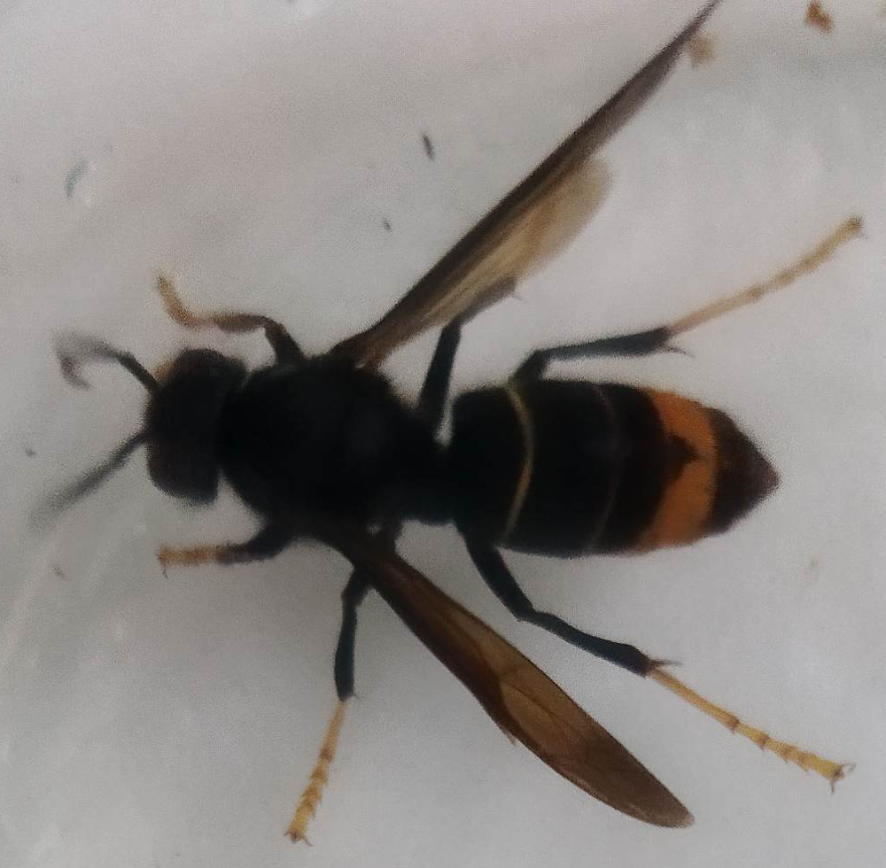
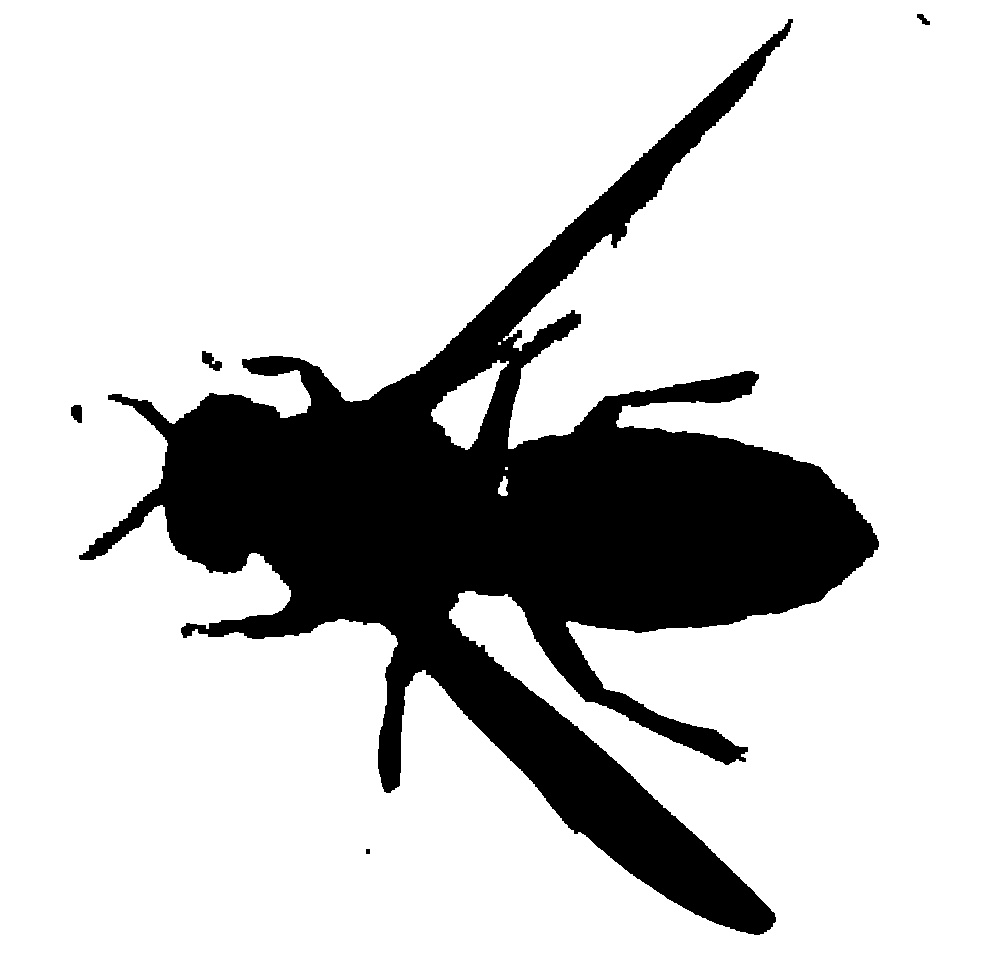
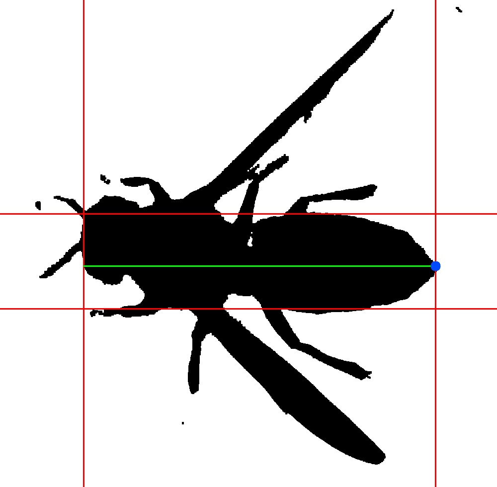

Bienvenue sur la documentation du projet !¶
Contents:
Indices and tables¶
Readme File :¶
Projet de Génie Logiciel : Analyse d’images de Frelons¶
Le but de ce projet est d’exécuter un traitement procédural sur des photos de frelons prises à partir d’un piège et de déterminer sa caste (Fondatrice, Ouvrière ou Mâle).
Installation¶
Les packages requis pour l’exécution sont :
opencv-python
minidom
numpy
Ils sont installables via la commande
pip3 install '<Nom du Paquet>'
Usage¶
Pour lancer le programme, on renseignera la commande suivante :
python3 main.py '<Chemin image>'
Fonctionnement du programme¶
En partant de l’image exemple suivante :
{kind=link}
Détourage¶
Par un système de masques retenant couleurs sombres et le gradiant jaune-orange, on obtient un masque de détourage. Il est ensute traité par par dilatation-érosion pour éliminer le bruit et d’éventuels artefacts visuels indésirables :
{kind=link}
Recherche de la caste¶
On cherche donc grâce à l’image détourée la caste à laquelle appartient le frelon.
Critère de longeur¶
Ici on détermine la longeur de l’insecte pour savoir si c’est une fondatrice ou non. Par comptage de pixels on peut déterminer la taille et l’extrémité de l’abdomen du frelon :
{kind=link}
Critère de forme de l’abdomen¶
On peut déterminer le sexe de l’insecte de par la forme de son abdomen. Si il est pointu, c’est une femelle, sinon, c’est un mâle. Le sexe est déterminé par aggrégat de resultats de plusieur méthodes de recherches.
Régréssion Linéaire et Logarithmique des points de contour de l’abdomen
Angle de croisement des droites de régression linéaire des deux côtés de l’abdomen
Restitution des résultats¶
Les résultats obtenus sont renseignés dans un fichier XML comme suit :
<?xml version="1.0" ?>
<data>
<picture name="15.jpg">
<caracteristics>
<cast>Fondatrice</cast>
<hornetlength unit="mm">10</hornetlength>
<abdomenshape>Pointu</abdomenshape>
<wingsspacing unit="mm">UNDEFINED</wingsspacing>
</caracteristics>
<metadata>
<date>08/11/2022</date>
<time>10:50</time>
<trapreference>001_22</trapreference>
<trapcode>001</trapcode>
</metadata>
</picture>
</data>
Les métadonées sont récupérées à partir de la lecture du fichier .csv attaché à chaque image.
Génération de la documentation¶
Nécessite les packages sphinx, m2r2 et sphinx-press-theme installables comme suit :
pip3 install sphinx && pip3 install m2r2 && pip3 install sphinx-press-theme
Pour regénérer la documentation, exécutez :
Sous environnement Unix:
bash docbuild.sh
Sous windows:
docbuild.bat
Les fichiers (dont index.html) se situeront dans “Documentation/_build/”
Tests unitaires¶
Nécessite le package pytest installable comme suit :
pip3 install pytest
Pour lancer l’éxecution des tests unitaires de ce projet, ouvrir un terminal dans le dossier “Tests Unitaires” et rentrer la commande :
Sous environnement Unix:
pytest -vv
Sous windows:
python3 -m pytest -vv
License¶
Créé par Timothée AUFFRET et Lucas SENLECQUE, dans le cadre d’un projet d’études à Polytech Tours. 2022-2023